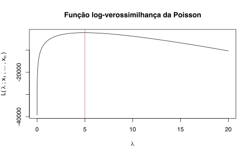
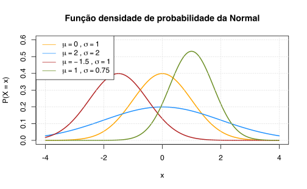
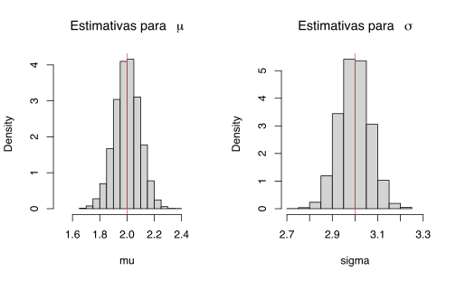
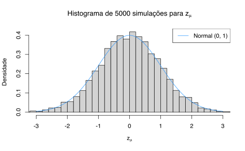
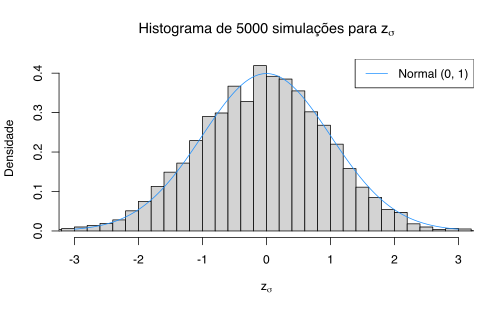

library(maxLik)
library(optimx)
# Para reproduzir os resultados
set.seed(33)Estimadores de Máxima Verossimilhança
A estimação por máxima verossimilhança possui várias boas propriedades. O estimador de máxima verossimilhança (EMV) é consistente (converge para o valor verdadeiro), normalmente assintótico (distribuição assintórica segue uma normal padrão) e eficiente (é o estimador de menor variância possível). Por isso, e outros motivos, ele é um estimador muito comumemente utilizado em estatística e econometria.
A intuição do EMV é a seguinte: temos uma amostra e estimamos os parâmetros que maximizam a probabilidade de que esta amostra tenha sido gerada por uma certa distribuição de probabilidade. Em termos práticos, eu primeiro suponho a forma da distribuição dos meus dados (e.g. normal), depois eu estimo os parâmetros \(\mu\) e \(\sigma\) de maneira que eles maximizem a probabilidade de que a minha amostra siga uma distribuição normal (tenha sido “gerada” por uma normal).
Há vários pacotes que ajudam a implementar a estimação por máxima verossimilhança no R. Neste post vou me ater apenas a dois pacotes: o optimx e o maxLik. O primeiro deles agrega funções de otimização de diversos outros pacotes numa sintaxe unificada centrada em algumas poucas funções. O último é feito especificamente para estimação de máxima verossimilhança então traz algumas comodidades como a estimação automática de erros-padrão.
Vale lembrar que o problema de MV é, essencialmente, um problema de otimização, então é possível resolvê-lo simplesmente com a função optim do R. Os dois pacotes simplesmente trazem algumas comodidades.
Exemplo com distribuição Poisson
A ideia da estimação por máxima verossimilhança é de encontrar os parâmetros que maximizam a probabilidade de que um certo conjunto de dados sejam gerados por algum processo específico. Agora, em português: imagine que temos uma amostra aleatória; não sabemos qual distribuição os dados seguem, mas vamos supor que eles seguem alguma distribuição específica, por exemplo, uma Poisson. O formato da Poisson depende do parâmetro \(\lambda\) e a ideia então é de encontrar o valor de \(\lambda\) que melhor aproxima a distribuição empírica/observada dos dados. Isto é, dado uma amostra aleatória \(x_{1}, x_{2}, \dots , x_{n}\) buscamos o valor de \(\lambda\) que maximiza a probabilidade de que os dados tenham sido gerados por uma distribuição de Poisson.
A Poisson é uma distribuição discreta parametrizada por um valor \(\lambda > 0\). O formato da distribuição varia com o valor de \(\lambda\). Lembrando que a função de distribuição da Poisson é dada pela expressão:
\[ f(k, \lambda) = \text{Pr}(X = k) = \frac{\lambda^{k}e^{-\lambda}}{k!}, \quad k = 0, 1, 2, \dots \]
O código abaixo faz o gráfico da função acima para diferentes valores de \(\lambda\).

Para montar a função de log-verossimilhança começamos com a função de verossimilhança de uma observação \(i\) qualquer e depois montamos a distribuição conjunta dos dados. Lembrando que a função de verossimilhança da Poisson para uma observação \(i\) é dada por:
\[ f(x_{i}, \lambda) = \frac{\lambda^{x_{i}}e^{-\lambda}}{x_{i}!} \]
Supondo que a amostra é de fato aleatória, a distribuição conjunta dos dados é simplesmente o produtório das distribuições individuais, isto é:
\[ \begin{align} \prod_{k = 1}^{n} f(x_{k}, \lambda) & = \prod_{k = 1}^{n} \left( \frac{\lambda^{x_{k}}e^{-\lambda}}{x_{k}!} \right) \\ & = \frac{\lambda^{\sum x_{k}} e^{-n\lambda}}{\prod_{k = 1}^{n}(x_{k}!)} \end{align} \]
Aplicando log chegamos na função de log-verossimilhança:
\[ \begin{align} \mathcal{L}(\lambda ; x_{1}, \dots , x_{n}) & = \text{ln}(\prod_{k = 1}^{n} f(x_{k}, \lambda)) \\ & = \text{ln}(\lambda^{\sum x_{k}}) + \text{ln}(e^{-n\lambda}) - \text{ln}(\prod_{k = 1}^{n}(x_{k}!)) \\ & = \text{ln}(\lambda)\sum_{k = 1}^{n}x_{k} - n\lambda - \sum_{k = 1}^{n} \text{ln}(x_{k}!) \end{align} \]
Dada uma amostra aleatória \(x_{1}, x_{2}, \dots , x_{n}\) buscamos o valor de \(\lambda\) que maximiza a função acima. Isto é, temos o seguinte problema de otimização:
\[ \underset{\lambda > 0}{\text{Max}} \quad \text{ln}(\lambda)\sum_{k = 1}^{n}x_{k} - n\lambda - \sum_{k = 1}^{n} \text{ln}(x_{k}!) \]
onde os valores de \(x_{k}\) são os nossos dados observados. Para implementar este procedimento no R primeiro montamos a função log-verossimilhança no código abaixo. Em seguida vamos usar a função base optim que resolve problemas de minimização. Como a função optim serve para minimizar funções precisamos implementar o negativo da função de log-verossimilhança (lembrando que maximizar \(f(x)\) é equivalente à minimizar \(-f(x)\)).
ll_pois <- function(x, theta) {
n <- length(x)
ll <- log(theta) * sum(x) - n * theta - sum(log(factorial(x)))
return(-ll)
}Vamos simular 1000 observações \(x_{i} \sim \text{Poisson}(\lambda = 5)\).
amostra <- rpois(1000, lambda = 5)Podemos tornar mais claro o procedimento de estimação olhando para o gráfico da função. O código abaixo plota o gráfico da função de log-verossimilhança para valores de \(\lambda\) no intervalo \([0, 20]\). Note que a função parece atingir um máximo em torno de \(5\), o valor verdadeiro do parâmetro.
eixo_lambda <- seq(0, 20, .001)
plot(eixo_lambda, -ll_pois(amostra, eixo_lambda), type = "l",
xlab = bquote(lambda),
ylab = bquote("L("~lambda~";"~x[1]~", ... ,"~x[n]~")"),
main = "Função log-verossimilhança da Poisson")
abline(v = 5, col = "indianred")
Para estimar \(\lambda\) usamos a função optim. É preciso definir algum valor inicial para que o otimizador numérico comece a procurar pelo máximo global. Em casos mais simples, de funções globalmente côncavas, esta escolha não apresenta grandes consequências. Em casos mais complicados, o resultado da estimação pode ser bastante sensível à escolha de valor inicial porque o otimizador pode cair em máximos/mínimos locais. No final do post discuto brevemente algumas soluções. Neste exemplo escolho arbitrariamente começar no valor \(1\).
Neste caso também poderíamos usar o fato de que a esperança da Poisson é igual a \(\lambda\), logo, pela Lei dos Grandes Números, a média amostral já deve estar próxima do verdadeiro valor de \(\lambda\). Assim, poderíamos também ter escolhido mean(amostra) como valor inicial.
fit <- optim(
par = 1,
fn = ll_pois,
x = amostra,
method = "BFGS",
hessian = TRUE
)
fit$par
[1] 4.938
$value
[1] 2202.837
$counts
function gradient
34 9
$convergence
[1] 0
$message
NULL
$hessian
[,1]
[1,] 202.5112A saída da função traz várias informações técnicas sobre a otimização numérica. A estimativa pontual computada foi de \(4.938\) - bastante próxima do verdadeiro valor do parâmetro. Usando a função str podemos observar a estrutura do objeto fit criado acima. As principais informações que podemos extrair são as estimativas dos parâmetros fit$par e a hessiana calculada nestes parâmetros fit$hessian.
str(fit)List of 6
$ par : num 4.94
$ value : num 2203
$ counts : Named int [1:2] 34 9
..- attr(*, "names")= chr [1:2] "function" "gradient"
$ convergence: int 0
$ message : NULL
$ hessian : num [1, 1] 203Usando a estimativa da hessiana podemos computar o erro-padrão da estimativa. Lembre que a variância assintótica do estimador de máxima verossimilhança é o inverso da matriz de informação de Fisher que pode ser expressa como o negativo do valor esperado da hessiana. Isto é, podemos encontrar a variância assintótica calculando o inverso da hessiana (como fizemos a minimização do negativo da função log-verossimilhança não precisamos calcular o negativo da hessiana).
(ep <- sqrt(1/fit$hess)) [,1]
[1,] 0.0702709Com o erro-padrão podemos calcular intervalos de confiança e estatística t.
(ic <- c(fit$par - 1.96 * ep, fit$par + 1.96 * ep))[1] 4.800269 5.075731(est_t <- (fit$par - 5) / ep) [,1]
[1,] -0.8823045Usando o pacote optimx
A função optim já é bastante antiga e um novo pacote, chamado optimx, foi criado. A ideia do pacote é de agregar várias funções de otimização que estavam espalhadas em diversos pacotes diferentes. As principais funções do pacote são optimx e optimr. Mais informações sobre o pacote podem ser encontradas aqui.
A sintaxe das funções é muito similar à sintaxe original do optim. O código abaixo faz o mesmo procedimento de estimação que o acima. Por padrão a função executa dois otimizadores: o BFGS e Nelder-Mead
summary(fit <- optimx(par = 1, fn = ll_pois, x = amostra)) p1 value fevals gevals niter convcode kkt1 kkt2 xtime
Nelder-Mead 4.9375 2202.837 32 NA NA 0 TRUE TRUE 0.001
BFGS 4.9380 2202.837 34 9 NA 0 TRUE TRUE 0.002Uma das principais vantagens do optimx é a possibilidade de usar vários métodos de otimização numérica numa mesma função.
fit <- optimx(
par = 1,
fn = ll_pois,
x = amostra,
method = c("nlm", "BFGS", "Rcgmin", "nlminb")
)
fit p1 value fevals gevals niter convcode kkt1 kkt2 xtime
nlm 4.937998 2202.837 NA NA 8 0 TRUE TRUE 0.001
BFGS 4.938000 2202.837 34 9 NA 0 TRUE TRUE 0.002
Rcgmin 4.937999 2202.837 708 112 NA 1 TRUE TRUE 0.039
nlminb 4.938000 2202.837 10 12 9 0 TRUE TRUE 0.001Como este exemplo é bastante simples os diferentes métodos parecem convergir para valores muito parecidos.
Usando o pacote maxLik
A função maxLik (do pacote homônimo) traz algumas comodidades: primeiro, ela maximiza as funções de log-verossimilhança, ou seja, não é preciso montar a função com sinal de menos como fizemos acima; segundo, ela já calcula erros-padrão e estatísticas-t dos coeficientes estimados. Além disso, ela também facilita a implementação de gradientes e hessianas analíticos e conta com métodos de otimização bastante populares como o BHHH. Mais detalhes sobre a função e o pacote podem ser encontradas aqui.
Para usar a função precisamos primeiro reescrever a função log-verossimilhança, pois agora não precisamos mais buscar o negativo da função. Como o R já vem com as funções de densidade de várias distribuições podemos tornar o código mais enxuto usando o dpois que implementa a função densidade da Poisson. O argumento log = TRUE retorna as probabilidades \(p\) como \(log(p)\).
ll_pois <- function(x, theta) {
ll <- dpois(x, theta, log = TRUE)
return(sum(ll))
}O comando abaixo executa a estimação. Note que a saída agora traz várias informações relevantes.
summary(fit <- maxLik(ll_pois, start = 1, x = amostra))--------------------------------------------
Maximum Likelihood estimation
Newton-Raphson maximisation, 8 iterations
Return code 8: successive function values within relative tolerance limit (reltol)
Log-Likelihood: -2202.837
1 free parameters
Estimates:
Estimate Std. error t value Pr(> t)
[1,] 4.93800 0.07617 64.83 <2e-16 ***
---
Signif. codes: 0 '***' 0.001 '**' 0.01 '*' 0.05 '.' 0.1 ' ' 1
--------------------------------------------Podemos implementar manualmente o gradiente e a hessiana da função. Neste caso, a estimativa do parâmetro continua a mesma mas o erro-padrão diminui um pouco. Note que também podemos fornecer estas informações para a função optimx. Derivando a função de log-verossimilhança:
\[ \begin{align} \frac{\partial \mathcal{L}(\lambda ; x)}{\partial\lambda} & = \frac{1}{\lambda}\sum_{k = 1}^{n}x_{k} - n \\ \frac{\partial^2 \mathcal{L}(\lambda ; x)}{\partial\lambda^2} & = -\frac{1}{\lambda^2}\sum_{k = 1}^{n}x_{k} \end{align} \]
O código abaixo implementa o gradiente e a hessiana e faz a estimação. O valor estimado continua praticamente o mesmo, mas o erro-padrão fica menor.
grad_pois <- function(x, theta) {
(1 / theta) * sum(x) - length(x)
}
hess_pois <- function(x, theta) {
-(1 / theta^2) * sum(x)
}
fit2 <- maxLik(
ll_pois,
grad = grad_pois,
hess = hess_pois,
start = 1,
x = amostra
)
summary(fit2)--------------------------------------------
Maximum Likelihood estimation
Newton-Raphson maximisation, 7 iterations
Return code 1: gradient close to zero (gradtol)
Log-Likelihood: -2202.837
1 free parameters
Estimates:
Estimate Std. error t value Pr(> t)
[1,] 4.93800 0.07027 70.27 <2e-16 ***
---
Signif. codes: 0 '***' 0.001 '**' 0.01 '*' 0.05 '.' 0.1 ' ' 1
--------------------------------------------Exemplo com a distribuição normal
A distribuição normal tem dois parâmetros: \(\mu\) e \(\sigma\). Lembrando que o primeiro indica a média e o segundo a desvio-padrão. A função de densidade de probabilidade é dada por:
\[ f(x, \theta) = \frac{1}{\sqrt{2\pi\sigma^{2}}}\text{exp}\left(\frac{-(x - \mu)^2}{2\sigma^{2}}\right) \]
onde \(\theta = (\mu, \sigma)\). O gráfico abaixo mostra como o formato da função varia conforme o valor destes parâmetros. Basicamente, quando a média aumenta, estamos “deslocando para a direita” e quando aumentamos o desvio-padrão estamos “achatando” a distribuição.

Lembrando que a função de distribuição de probabilidade da normal para uma observação \(i\)
\[ f(x_{i}, \theta) = \frac{1}{\sqrt{2\pi\sigma^{2}}}e^{\frac{-(x_{i} - \mu)^2}{2\sigma^{2}}} \]
Fazendo o produtório da expressão acima para cada \(i\)
\[ \prod_{i = 1}^{N}f(x_{i}, \theta) = (2\pi\sigma^{2})^{-\frac{N}{2}}\text{exp}\left( -\frac{1}{2\sigma^{2}}\prod_{i = 1}^{N}(x_{i} - \mu)^2\right) \]
e agora passando log, temos:
\[ L(x_{i}, \theta) = -\frac{N}{2}\text{ln}(2\pi) -N\text{ln}(\sigma) -\frac{1}{2\sigma^{2}}\sum_{i = 1}^{N}(x_{i} - \mu)^{2} \]
Montamos a função log-verossimilhança usando a função dnorm
ll_norm <- function(theta) {
ll <- dnorm(x, theta[1], theta[2], log = TRUE)
-sum(ll)
}Vamos simular uma amostra aleatória \(x_{1}, x_{2}, \dots, x_{1000}\) onde cada \(x_{i}\) segue uma distribuição normal com média \(2\) e desvio-padrão \(3\) (i.e., variância \(9\)).
Primeiro vamos usar a função optimx
# warnings por causa dos valores negativos no log
x <- rnorm(n = 1000, mean = 2, sd = 3)
(fit <- optimx(par = c(1, 1), fn = ll_norm, method = "BFGS")) p1 p2 value fevals gevals niter convcode kkt1 kkt2 xtime
BFGS 2.138082 3.058111 2536.736 47 20 NA 0 TRUE TRUE 0.003Note que a função retorna mensagens de erro indicando que a função retornou NaNs. Isto acontece porque o otimizador experimenta valores não-positivos para \(\sigma\) e isto não é admissível pois \(\text{ln}(\sigma)\), que aparece no segundo termo da equação acima, não é definido para \(\sigma < 0\). Além disso, \(\sigma\) não pode ser igual a zero pois ele aparece no denominador do último termo à direita da expressão da log-verossimilhança.
Intuitivamente isto é bastante óbvio: \(\sigma\) representa o desvio-padrão da distribuição e \(\sigma^{2}\) a sua variância: não podemos ter valores negativos ou nulos para estas expressões.
Podemos restringir os valores dos parâmetros usando os argumentos upper e lower para evitar as mensagens de warning, mas, na prática, isto não costuma fazer diferença no resultado final da estimação. Note que podemos deixar a restrição livre usando Inf e -Inf que correspondem a \(\infty\) e \(-\infty\).
fit <- optimx(
par = c(1, 1),
fn = ll_norm,
method = "L-BFGS-B",
upper = c(Inf, Inf),
lower = c(-Inf, 0)
)
fit p1 p2 value fevals gevals niter convcode kkt1 kkt2
L-BFGS-B 2.138093 3.058112 2536.736 11 11 NA 0 TRUE TRUE
xtime
L-BFGS-B 0.001Propriedades dos estimadores de MV
A teoria dos estimadores de máxima verossimilhança nos garante que eles são consistentes (i.e. que eles aproximam o valor verdadeiro dos parâmetros) e normalmente assintóticos (a distribuição assintótica segue uma distribuição normal) desde que algumas condições de regularidade sejam atentdidas.
Podemos demonstrar ambas as propriedades fazendo algumas simulações no R.
Consistência
Vamos montar um experimento simples: simulamos 5000 amostras aleatórias de tamanho 1000 seguindo uma distribuição \(N(2, 3)\); computamos as estimativas para \(\mu\) e \(\sigma\) e suas respectivas variâncias assintóticas e depois analisamos suas propriedades.
- Simular uma amostra segundo uma distribuição.
- Estimata os parâmetros da distribuição.
- Calcula a variância assintótica dos estimadores.
- Repete 5000 vezes os passos 1-3.
O código abaixo implementa exatamente este experimento. Note que a matriz de informação de Fisher é aproximada pela hessiana.
r <- 5000
n <- 1000
estimativas <- matrix(ncol = 4, nrow = r)
for(i in 1:r) {
x <- rnorm(n = n, mean = 2, sd = 3)
fit <- optimr(
par = c(1, 1),
fn = ll_norm,
method = "BFGS",
hessian = TRUE
)
# Guarda o valor estimado do parâmetro
estimativas[i, 1:2] <- fit$par
estimativas[i, 3:4] <- diag(n * solve(fit$hess))
}A consistência dos estimadores \(\hat{\theta}_{MV}\) significa que eles aproximam os valores verdadeiros do parâmetros \(\theta_{0}\) à medida que aumenta o tamanho da amostra. Isto é, se tivermos uma amostra grande \(\mathbb{N} \to \infty\) então podemos ter confiança de que nossos estimadores estão muito próximos dos valores verdadeiros dos parâmetros \(\hat{\theta}_{\text{MV}} \to \theta_{0}\)
O código abaixo calcula a média das estimativas para cada parâmetro - lembrando que \(\mu_{0} = 2\) e que \(\sigma_{0} = 3\). Além disso, o histograma das estimativas mostra como as estimativas concentram-se em torno do valor verdadeiro do parâmetro (indicado pela linha vertical).
# | fig-width: 10
par(mfrow = c(1, 2))
# Consistência dos estimadores de MV
mu <- estimativas[, 1]; sigma <- estimativas[, 2]
mean(mu)[1] 2.000883mean(sigma)[1] 2.997335hist(mu, main = bquote("Estimativas para "~~mu), freq = FALSE, xlim = c(1.5, 2.5))
abline(v = 2, col = "indianred")
hist(sigma, main = bquote("Estimativas para "~~sigma), freq = FALSE, xlim = c(2.7, 3.3))
abline(v = 3, col = "indianred")
Normalmente assintótico
Dizemos que os estimadores de máxima verossimilhança são normalmente assintóticos porque a sua distribuição assintótica segue uma normal padrão. Especificamente, temos que:
\[ z_{\theta} = \sqrt{N}\frac{\hat{\theta}_{MV} - \theta}{\sqrt{\text{V}_{ast}}} \to \mathbb{N}(0, 1) \]
onde \(\text{V}_{ast}\) é a variância assintótica do estimador. O código abaixo calcula a expressão acima para os dois parâmetros e apresenta o histograma dos dados com uma normal padrão superimposta.
No loop acima usamos o fato que a matriz de informação de Fisher pode ser estimada pela hessiana. O código abaixo calcula a expressão acima para os dois parâmetros e apresenta o histograma dos dados com uma normal padrão superimposta.
# Normalidade assintótica
# Define objetos para facilitar a compreensão
mu_hat <- estimativas[, 1]
sigma_hat <- estimativas[, 2]
var_mu_hat <- estimativas[, 3]
var_sg_hat <- estimativas[, 4]
# Centra a estimativa
mu_centrado <- mu_hat - 2
sigma_centrado <- sigma_hat - 3
# Computa z_mu z_sigma
mu_normalizado <- sqrt(n) * mu_centrado / sqrt(var_mu_hat)
sigma_normalizado <- sqrt(n) * sigma_centrado / sqrt(var_sg_hat)# Monta o gráfico para mu
# Eixo x
grid_x <- seq(-3, 3, 0.01)
hist(
mu_normalizado,
main = bquote("Histograma de 5000 simulações para z"[mu]),
freq = FALSE,
xlim = c(-3, 3),
breaks = "fd",
xlab = bquote("z"[mu]),
ylab = "Densidade"
)
lines(grid_x, dnorm(grid_x, mean = 0, sd = 1), col = "dodgerblue")
legend("topright", lty = 1, col = "dodgerblue", legend = "Normal (0, 1)")
# Monta o gráfico para sigma2
hist(
sigma_normalizado,
main = bquote("Histograma de 5000 simulações para z"[sigma]),
freq = FALSE,
xlim =c(-3, 3),
breaks = "fd",
xlab = bquote("z"[sigma]),
ylab = "Densidade"
)
lines(grid_x, dnorm(grid_x, mean = 0, sd = 1), col = "dodgerblue")
legend("topright", lty = 1, col = "dodgerblue", legend = "Normal (0, 1)")
Escolha de valores inicias
Como comentei acima, o método de estimação por MV exige que o usuário escolha valores iniciais (chutes) para os parâmetros que se quer estimar.
O exemplo abaixo mostra o caso em que a escolha de valores iniciais impróprios leva a estimativas muito ruins.
# sensível a escolha de valores inicias
x <- rnorm(n = 1000, mean = 15, sd = 4)
fit <- optim(
par = c(1, 1),
fn = ll_norm,
method = "BFGS",
hessian = TRUE
)
fit$par
[1] 618.6792 962.0739
$value
[1] 7984.993
$counts
function gradient
107 100
$convergence
[1] 1
$message
NULL
$hessian
[,1] [,2]
[1,] 0.001070703 -0.0013531007
[2,] -0.001353101 0.0001884928Note que as estimativas estão muito distantes dos valores corretos \(\mu = 15\) e \(\sigma = 4\). Uma das soluções, já mencionada acima, é de usar os momentos da distribuição como valores iniciais.
O código abaixo usa os momentos empíricos como valores inicias para \(\mu\) e \(\sigma\):
\[ \begin{align} \mu_{inicial} & = \frac{1}{n}\sum_{i = 1}^{n}x_{i} \\ \sigma_{inicial} & = \sqrt{\frac{1}{n} \sum_{i = 1}^{n} (x_{i} - \mu_{inicial})^2} \end{align} \]
(chute_inicial <- c(mean(x), sqrt(var(x))))[1] 14.859702 3.930849(est <- optimx(par = chute_inicial, fn = ll_norm)) p1 p2 value fevals gevals niter convcode kkt1 kkt2
Nelder-Mead 14.85997 3.929097 2787.294 47 NA NA 0 TRUE TRUE
BFGS 14.85970 3.928884 2787.294 15 2 NA 0 TRUE TRUE
xtime
Nelder-Mead 0.001
BFGS 0.001Agora as estimativas estão muito melhores. Outra opção é experimentar com otimizadores diferentes. Aqui a função optimx se prova bastante conveniente pois admite uma grande variedade de métodos de otimizãção.
Note como os métodos BFGS e CG retornam valores muito distantes dos verdadeiros. Já o método bobyqa retorna um valor corretor para o parâmetro da média, mas erra no parâmetro da variânica. Já os métodos nlminb e Nelder-Mead ambos retornam os valores corretos.
# Usando outros métodos numéricos
optimx(
par = c(1, 1),
fn = ll_norm,
method = c("BFGS", "Nelder-Mead", "CG", "nlminb", "bobyqa")
) p1 p2 value fevals gevals niter convcode kkt1
BFGS 618.67917 962.073907 7984.993 107 100 NA 1 TRUE
Nelder-Mead 14.85571 3.929621 2787.294 83 NA NA 0 TRUE
CG 46.43586 628.570987 7358.601 204 101 NA 1 TRUE
nlminb 14.85970 3.928883 2787.294 23 47 19 0 TRUE
bobyqa 15.20011 8.993240 3211.556 109 NA NA 0 FALSE
kkt2 xtime
BFGS FALSE 0.007
Nelder-Mead TRUE 0.001
CG FALSE 0.008
nlminb TRUE 0.001
bobyqa FALSE 0.033Vale notar também alguns detalhes técnicos da saída. Em particular, convcode == 0 significa que o otimizador conseguiu convergir com sucesso, enquanto convcode == 1 indica que o otimizador chegou no límite máximo de iterações sem convergir. Vemos que tanto o BFGS e o CG falharam em convergir e geraram os piores resultados.
Já o kkt1 e kkt2 verificam as condições de Karush-Kuhn-Tucker (às vezes apresentadas apenas como condições de Kuhn-Tucker). Resumidamente, a primeira condição verifica a parte necessária do teorema enquanto a segunda condição verifica a parte suficiente. Note que o bobyqa falha em ambas as condições (pois ele não é feito para este tipo de problema).
Os métodos que retornam os melhores valores, o Nelder-Mead e nlminb são os únicos que convergiram com sucesso e que atenderam a ambas as condições de KKT. Logo, quando for comparar os resltados de vários otimizadores distintos, vale estar atento a estes valores.
Mais detalhes sobre os métodos podem ser encontrados na página de ajuda da função ?optimx.